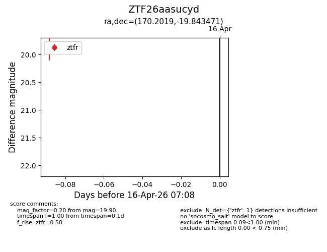
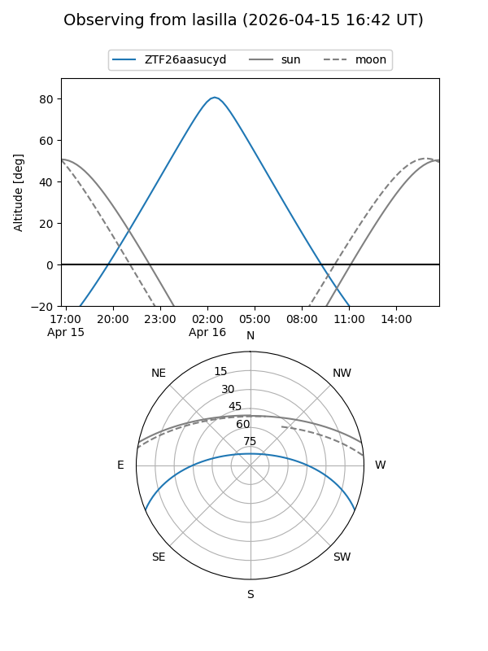
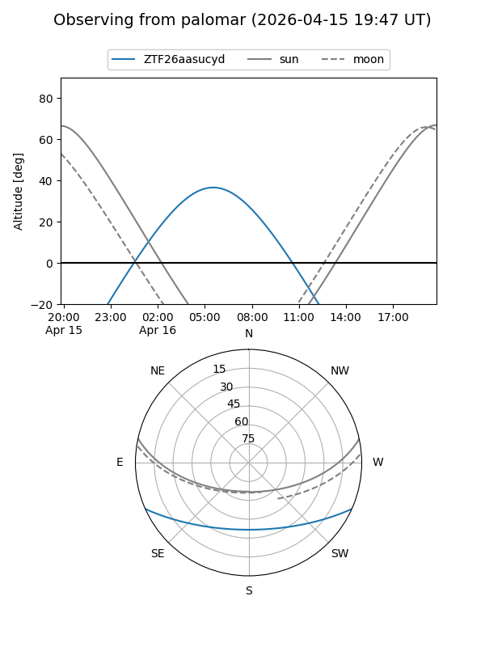

ZTF26aasucyd
Target ZTF26aasucyd at 2026-04-16 07:17
Aliases and brokers:
FINK: link
Lasair: link
ALeRCE: link
alt names
ZTF26aasucyd (ztf,fink_ztf)
Coordinates:
equatorial (ra, dec) = 170.2019,-19.84347
equatorial (HMS+DMS) = 11:20:48.45,-19:50:36.49
galactic (l, b) = (275.4941,+38.15212)
Flags:
Photometry:
last ztfr=19.90
1 ztfr detections
Lightcurve

Visibility


Additional plots